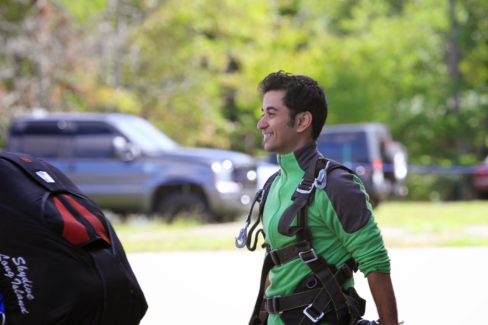
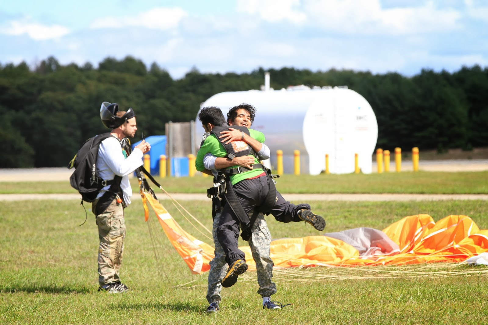

I do not consider myself a daredevil. I do not go looking for near-death experiences just so I can feel the rush. So when I decided I wanted to skydive, it was less for the rush commonly associated with it, and more for the experience of trying something new (and of course the bragging rights after). I have wanted to skydive ever since college when a bunch of my friends did it. I was invited but for reasons I cannot recall now, I couldn't join them (No, it wasn't fear!). Watching their jump videos and them going on about their horrifying, yet exhilarating experience made me resolve to myself that I will do this soon... very soon.
Well, if it were solely up to me, like with all things I'm slightly nervous/scared about... i'd keep pushing them to a future time - a safe distance away from "let me plan and do this now!". Boy, am I glad that most decisions in life are not solely up to me and cheers for humans being social animals! Two things happened recently that would force me to stop procrastinating about skydiving. First, I watched this movie - Zindagi Na Mile Dobara (wow, I just realized while thinking of an English translation that this means YOLO). It's about three estranged friends that take part in a series of activities that ultimately brings them close once again... good movie. Needless to say one of the activities was skydiving. Like most normal humans, I get inspired by movies and like for most normal humans the inspiration lasts about 20 minutes after the movie has ended. The anomaly this time being that within those 20 minutes I happened to talk to someone very close to me, and mentioned something along the lines of... "I really wanna skydive!!". And out of sheer luck, the timing of this statement happened to be very close to my upcoming birthday when this person was looking for ideas for birthday gifts. So the second event that made skydiving a reality for me, was a birthday gift I received this year - the skydive package.
The scariest moments of skydiving is not when you're skydiving but the never ending hours you spend waiting for it to happen! The day turned out to be absolutely beautiful. Once near the landing zone, we could see the planes taking off. If you squinted you could see the tiny planes taking a dump high up in the sky. It was hard to fathom that the little white drops coming out the plane were actually people like us. It wasn't too long from our arrival that I felt the initial anxiousness give way to jittery excitement. Suddenly I couldn't wait to do it... couldn't wait to experience it. After what seemed like an eternity the loudspeaker finally announced our names to get ready for we were next. As our mispronounced names echoed through the clear sunny outdoors, the heartbeat quickened once again. The moment was finally here. We had two bearded men put a harness around us in a careful yet perfunctory way. All prepped up, we looked like bastard children of top gun stars and Bollywood's colors. This was followed by our crew coming and introducing themselves to us. These were overly happy people. I guess it helps calm your nerves if the people who're going up with you are treating jumping out of a plane at 13 thousand feet as "child's play". The wait was over, we were escorted to our tiny plane.

As the plane took off, I was numb with excitement. I didn't want to talk I didn't want to look at anyone, I just wanted to absorb everything about this experience. I could see an army guy sitting in front of me. So he'd be jumping first. This guy didn't even know where the landing zone was... mid-flight one of the instructors had to show him on a sad excuse for a map stuck on the plane ceiling. Seriously, no matter how brave you think you are, these army guys still make you look like a sissy. Anyway, the tiny plane kept climbing up and I kept thinking maybe now we'll jump... maybe now... but 13k feet is a long way up. All of a sudden the thousands of thoughts running through my head were drowned by loss of pressure and noise. Someone had opened the airplane door. The moment was here. I was just about preparing myself to see the army guy jump first, when it happened. Without a moment's hesitation this guy just backed up and leaped out into the air. Did I say that the scariest moment about skydiving is while you're waiting for it? Scratch that!... the scariest moment of skydiving is watching the person in front of you jump out. In a fraction of a second you see this human body disappear out of sight as it falls.
In another fraction of a second your mind switches from "ooo sht that guy just fell off... " to "ooo sht... i'm next!". Here we go... three awkward steps towards the door. The gust was making it difficult to see. One look back at the people you love that are on the plane. Wave. and OFF WE GOOOO. The next 1 minute is very hard to describe in words. No it doesn't feel like a roller coaster, it doesn't feel like anything you've felt before. It is the most exhilarating, the most adrenalin pumping 60 seconds I have ever experienced in life. And on top of that... it is also very very beautiful. As the tear drops are snatched away by the wind and carried upwards, as you grit your teeth through your smile to cope with the G force, you can see... you can see the clouds, the horizon, the blue expanse of water, the roundness of earth. And just like how it started, the free fall was over suddenly. The chute was open and the next 7 minutes, while the instructor pointed out the Manhattan skyline, and talked about the various landmarks, all I could think about was those initial 60 seconds and how thankful I was to have experienced this.

A few acrobats and 7 minutes later, when we touched ground I thanked my instructor as genuinely as I could. The euphoria was humming in my brain and I would continue to feel like that for a while. Even now as I think about the experience I'm filled with excitement and gratitude for having the opportunity to experience it. So, with another once in a lifetime experience under my belt, I hereby mark - Jump out of a plane and freefall at 120mph complete.